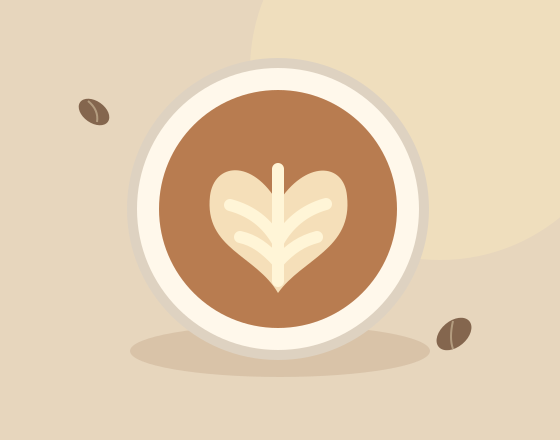
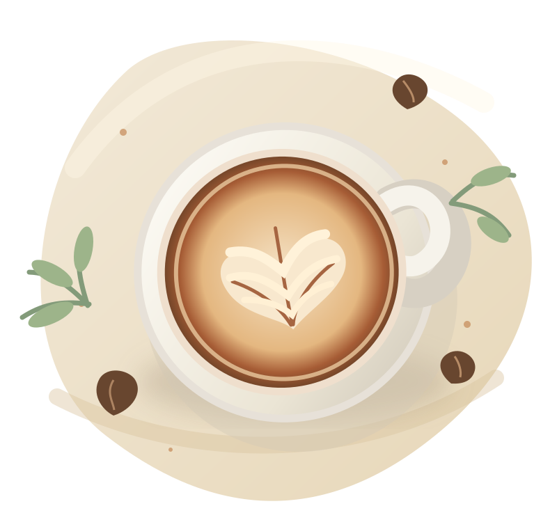
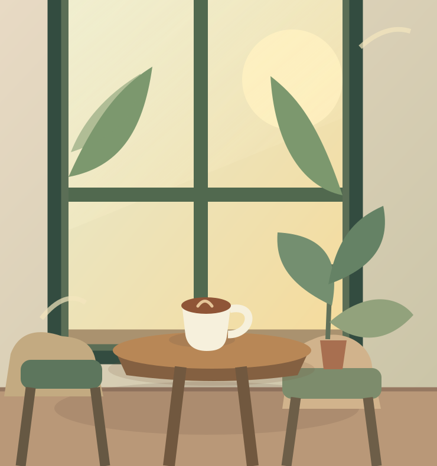

BEST SELLER晨光拿鐵
濃縮咖啡 × 綿密奶香
日子再忙，也值得為一杯好咖啡停留。讓溫柔的香氣，陪你把每個普通日常，過成喜歡的模樣。


SLOW DAYS01 / OUR STORY
半日晴，想像中的街角咖啡店。名字來自一個簡單的願望：每天都能擁有半天的好天氣，和一點屬於自己的時間。
我們喜歡咖啡剛入口的溫度、窗邊落下的光，也喜歡那些不用說太多話就感到舒服的午後。
看看我們的日常堅持03 / WHAT WE BELIEVE
一杯咖啡帶來的幸福，往往藏在最簡單的日常裡。
不追求匆忙，只想好好呈現每一杯飲品的風味。
用樸實的材料與溫柔的味道，陪伴小小的休息時刻。
不需要特別的理由，今天也值得好好照顧自己。
04 / SAY HELLO
這是為學習網站接案而設計的虛構咖啡品牌。以下資訊是示範排版，實際為客戶建站時，會替換為真實營業資料。
台灣某個陽光很好的街角（無實體門市）
週二至週日 10:00–18:00（僅供排版示意）
正式接案時可替換為客戶的 LINE、電話或社群連結